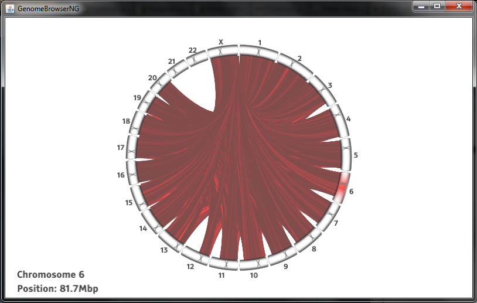
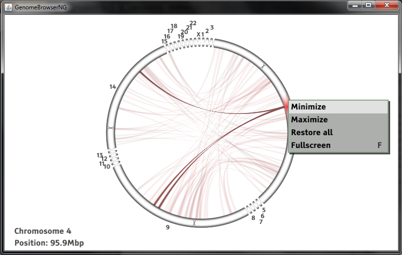
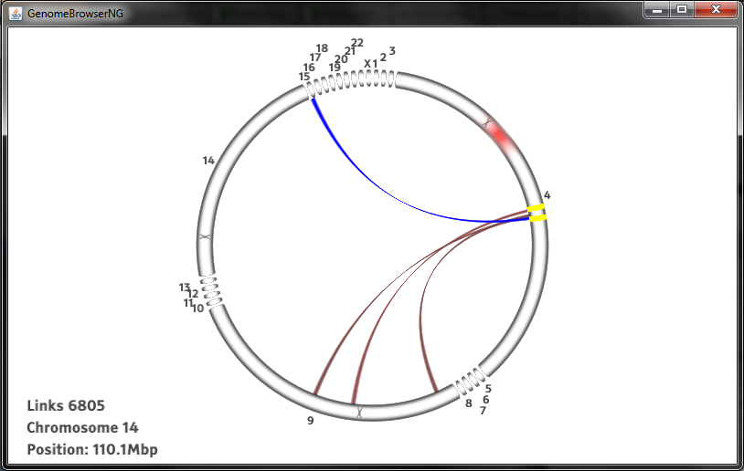
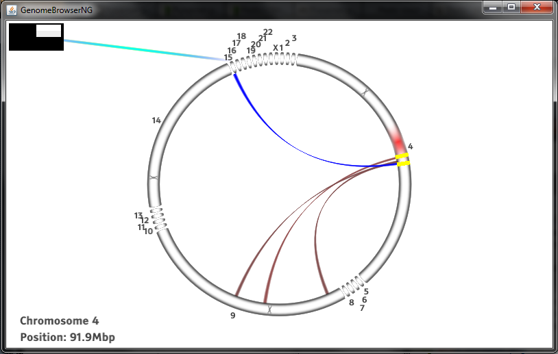

Genome Browser NG
Usage
Here's the main view, where you can see the genome with connecting arcs between chromosomes.
For a better view chromosomes can be minimized or maximized from the context menu that opens with right click. 'Restore all' restores all chromosomes to their original size.
'Fullscreen' from the context menu or pressing 'F' from keyboard changes to fullscreen view.
To select a connection to view, left click a place on the genome wheel, where you want to limit the selection to and yellow selector lines limiting the shown connections appear. Now the wanted connection is easier to select. Select with left mouse click or with keyboard with left and right arrows and enter. Also the size of the limited area can be adjusted with mouse wheel.

The selected places (the ends of the selected arc) from the chromosome open into a trackview, where more data can be seen. Trackview can be zoomed with the mouse wheel. To return to the circle view click the x that closes the window.
The opened connection remains as a minimized capsule that can be left clicked to reopen the view or closed by right clicking. The line from the capsule points on the view's place on the chromosome. New minimized capsules can also be opened by left clicking outside the circle.
Command line parameters
-f [number] link filtering range (0 turns filtering off)
-g [h/r] human or rat genome data
-bam [bam-file] opens a bam-file
-bai [bai-file] opens a bai-file
-d debug-mode
-p [data path] sets the data path